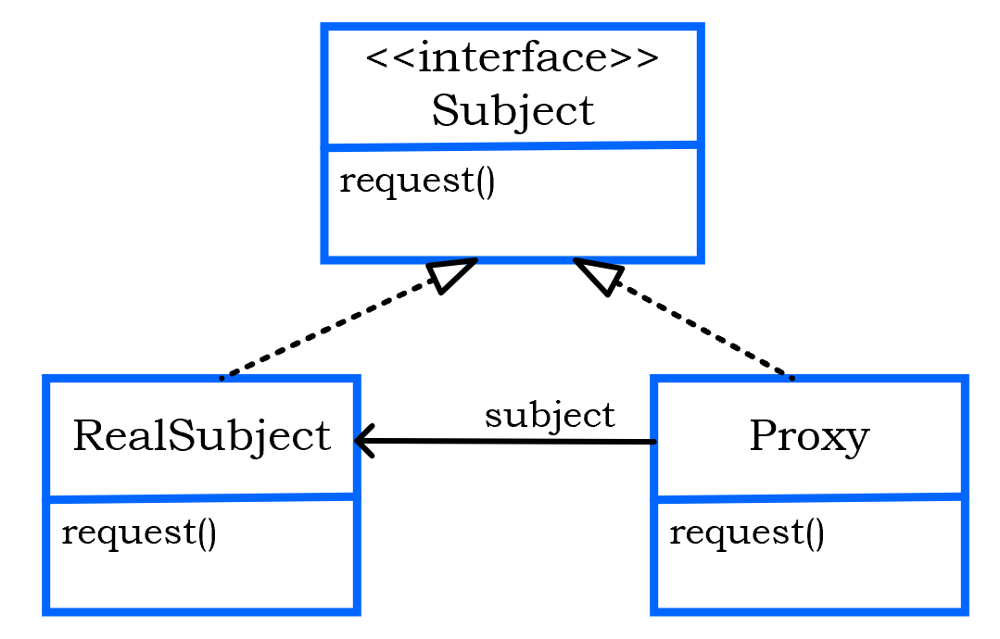

<!DOCTYPE html>
<html>
<head><meta name="generator" content="Hexo 3.8.0">
  <!-- hexo-inject:begin --><!-- hexo-inject:end --><meta charset="utf-8">
  

  
  <title>OO Design Patterns | TongTong Shi&#39;s Blog</title>
  <meta name="viewport" content="width=device-width, initial-scale=1, maximum-scale=1">
  <meta name="description" content="This post is the study note of `Head First Design Patterns`. In this post, many design patterns will be introduced briefly. To know more details of each design pattern, you can check other posts. And">
<meta name="keywords" content="Design Pattern">
<meta property="og:type" content="article">
<meta property="og:title" content="OO Design Patterns">
<meta property="og:url" content="http://yoursite.com/2019/10/07/design-patterns/index.html">
<meta property="og:site_name" content="TongTong Shi&#39;s Blog">
<meta property="og:description" content="This post is the study note of `Head First Design Patterns`. In this post, many design patterns will be introduced briefly. To know more details of each design pattern, you can check other posts. And">
<meta property="og:locale" content="default">
<meta property="og:image" content="http://yoursite.com/2019/10/07/design-patterns/strategy.png">
<meta property="og:image" content="http://yoursite.com/2019/10/07/design-patterns/observer.png">
<meta property="og:image" content="http://yoursite.com/2019/10/07/design-patterns/decorator.png">
<meta property="og:image" content="http://yoursite.com/2019/10/07/design-patterns/factory.png">
<meta property="og:image" content="http://yoursite.com/2019/10/07/design-patterns/abstract_factory.png">
<meta property="og:image" content="http://yoursite.com/2019/10/07/design-patterns/singleton.png">
<meta property="og:image" content="http://yoursite.com/2019/10/07/design-patterns/commandobject.png">
<meta property="og:image" content="http://yoursite.com/2019/10/07/design-patterns/command.png">
<meta property="og:image" content="http://yoursite.com/2019/10/07/design-patterns/adapter.png">
<meta property="og:image" content="http://yoursite.com/2019/10/07/design-patterns/facade.png">
<meta property="og:image" content="http://yoursite.com/2019/10/07/design-patterns/template.png">
<meta property="og:image" content="http://yoursite.com/2019/10/07/design-patterns/iterator.png">
<meta property="og:image" content="http://yoursite.com/2019/10/07/design-patterns/tree.png">
<meta property="og:image" content="http://yoursite.com/2019/10/07/design-patterns/composite.png">
<meta property="og:image" content="http://yoursite.com/2019/10/07/design-patterns/state.png">
<meta property="og:image" content="http://yoursite.com/2019/10/07/design-patterns/proxy.png">
<meta property="og:image" content="http://yoursite.com/2019/10/07/design-patterns/remoteproxy.png">
<meta property="og:image" content="http://yoursite.com/2019/10/07/design-patterns/virtualproxy.png">
<meta property="og:image" content="http://yoursite.com/2019/10/07/design-patterns/protectionproxy.png">
<meta property="og:updated_time" content="2019-10-10T17:19:01.417Z">
<meta name="twitter:card" content="summary">
<meta name="twitter:title" content="OO Design Patterns">
<meta name="twitter:description" content="This post is the study note of `Head First Design Patterns`. In this post, many design patterns will be introduced briefly. To know more details of each design pattern, you can check other posts. And">
<meta name="twitter:image" content="http://yoursite.com/2019/10/07/design-patterns/strategy.png">
  
    <link rel="alternate" href="/atom.xml" title="TongTong Shi&#39;s Blog" type="application/atom+xml">
  
  
    <link rel="icon" href="/favicon.png">
  
  
    <link href="//fonts.googleapis.com/css?family=Source+Code+Pro" rel="stylesheet" type="text/css">
  
  <link rel="stylesheet" href="/css/style.css"><!-- hexo-inject:begin --><!-- hexo-inject:end -->
</head>
</html>
<body>
  <!-- hexo-inject:begin --><!-- hexo-inject:end --><div id="container">
    <div id="wrap">
      <header id="header">
  <div id="banner"></div>
  <div id="header-outer" class="outer">
    <div id="header-title" class="inner">
      <h1 id="logo-wrap">
        <a href="/" id="logo">TongTong Shi&#39;s Blog</a>
      </h1>
      
    </div>
    <div id="header-inner" class="inner">
      <nav id="main-nav">
        <a id="main-nav-toggle" class="nav-icon"></a>
        
          <a class="main-nav-link" href="/">Home</a>
        
          <a class="main-nav-link" href="/archives">Archives</a>
        
      </nav>
      <nav id="sub-nav">
        
          <a id="nav-rss-link" class="nav-icon" href="/atom.xml" title="RSS Feed"></a>
        
        <a id="nav-search-btn" class="nav-icon" title="Search"></a>
      </nav>
      <div id="search-form-wrap">
        <form action="//google.com/search" method="get" accept-charset="UTF-8" class="search-form"><input type="search" name="q" class="search-form-input" placeholder="Search"><button type="submit" class="search-form-submit">&#xF002;</button><input type="hidden" name="sitesearch" value="http://yoursite.com"></form>
      </div>
    </div>
  </div>
</header>
      <div class="outer">
        <section id="main"><article id="post-design-patterns" class="article article-type-post" itemscope itemprop="blogPost">
  <div class="article-meta">
    <a href="/2019/10/07/design-patterns/" class="article-date">
  <time datetime="2019-10-07T19:05:47.000Z" itemprop="datePublished">2019-10-07</time>
</a>
    
  </div>
  <div class="article-inner">
    
    
      <header class="article-header">
        
  
    <h1 class="article-title" itemprop="name">
      OO Design Patterns
    </h1>
  

      </header>
    
    <div class="article-entry" itemprop="articleBody">
      
        <p>This post is the study note of <a href="https://www.amazon.ca/Head-First-Design-Patterns-Brain-Friendly/dp/0596007124" target="_blank" rel="noopener">`Head First Design Patterns`</a>. In this post, many design patterns will be introduced briefly. To know more details of each design pattern, you can check other posts. And I also created a repository on Github including almost all the examples in this book <a href="https://github.com/tongshi049/head_first_design_patterns" target="_blank" rel="noopener">`git repository`</a>.</p>
<a id="more"></a>
<h3 id="font-colordodgerblue1-strategy-patternfont"><a class="markdownIt-Anchor" href="#font-colordodgerblue1-strategy-patternfont"></a> <font color="dodgerblue">1. Strategy Pattern</font></h3>
<h4 id="font-colormediumslatebluedefinitionfont"><a class="markdownIt-Anchor" href="#font-colormediumslatebluedefinitionfont"></a> <font color="mediumslateblue">Definition:</font></h4>
<p>It <strong>defines a family of algorithms, encapsulates each one, and makes them interchangeable</strong>. Strategy lets the algorithm vary independently from clients that use it.</p>
<h4 id="font-colormediumslatebluethe-class-diagramfont"><a class="markdownIt-Anchor" href="#font-colormediumslatebluethe-class-diagramfont"></a> <font color="mediumslateblue">The class diagram:</font></h4>

<h4 id="font-colormediumslatebluetipsfont"><a class="markdownIt-Anchor" href="#font-colormediumslatebluetipsfont"></a> <font color="mediumslateblue">Tips:</font></h4>
<p>We can see the strategy pattern is flexible, since it uses <em>object composition</em>. With strategy pattern, clients can change their algorithms <em>at runtime</em> simply by using a different strategy object.</p>
<h3 id="font-colordodgerblue2-observer-patternfont"><a class="markdownIt-Anchor" href="#font-colordodgerblue2-observer-patternfont"></a> <font color="dodgerblue">2. Observer Pattern</font></h3>
<h4 id="font-colormediumslatebluedefinitionfont-2"><a class="markdownIt-Anchor" href="#font-colormediumslatebluedefinitionfont-2"></a> <font color="mediumslateblue">Definition:</font></h4>
<p>It defines a <strong>ONE-to-MANY dependency</strong> between objects so that when <strong>one object changes state</strong>, all of its dependents are <strong>notified and updated</strong> automatically.</p>
<h4 id="font-colormediumslatebluethe-class-diagramfont-2"><a class="markdownIt-Anchor" href="#font-colormediumslatebluethe-class-diagramfont-2"></a> <font color="mediumslateblue">The class diagram:</font></h4>

<h4 id="font-colormediumslatebluetipsfont-2"><a class="markdownIt-Anchor" href="#font-colormediumslatebluetipsfont-2"></a> <font color="mediumslateblue">Tips:</font></h4>
<ul>
<li>Objects use the <em>subject interface</em> to register as a object and also to remove themselves from being observers.</li>
<li>Each subject can have <em><strong>MANY</strong></em> observers.</li>
<li>Each observer registers with a concrete subject to receive updates.</li>
<li><font color="tomato">Observer pattern makes subject and observers <em><strong>LOOSELY COUPLED</strong></em>.</font>
<ul>
<li>The only thing the subject knows about an observer is <strong>it implements a certain interface</strong>.</li>
<li>A new observer can be <strong>added at any time</strong>.</li>
<li>There is <strong>no need to modify a subject</strong> when adding a new type observer.</li>
<li>Subjects and observers can be <strong>reused</strong>, since they are indepent of each other.</li>
</ul>
</li>
</ul>
<h3 id="font-colordodgerblue3-decorator-patternfont"><a class="markdownIt-Anchor" href="#font-colordodgerblue3-decorator-patternfont"></a> <font color="dodgerblue">3. Decorator Pattern</font></h3>
<h4 id="font-colormediumslatebluedefinitionfont-3"><a class="markdownIt-Anchor" href="#font-colormediumslatebluedefinitionfont-3"></a> <font color="mediumslateblue">Definition:</font></h4>
<p>It <strong>attaches additional responsibilities to an object dynamically</strong>. Decorators provide a flexible alternative to subclassing for extending functionality.</p>
<h4 id="font-colormediumslatebluethe-class-diagramfont-3"><a class="markdownIt-Anchor" href="#font-colormediumslatebluethe-class-diagramfont-3"></a> <font color="mediumslateblue">The class diagram:</font></h4>

<h4 id="font-colormediumslatebluetipsfont-3"><a class="markdownIt-Anchor" href="#font-colormediumslatebluetipsfont-3"></a> <font color="mediumslateblue">Tips:</font></h4>
<ul>
<li>Each component can be used on its own or wrapped by a decorator.</li>
<li>Each decorator <em><strong>HAS-A</strong></em> component, which means it has a instance variable that holds the reference to a component.</li>
</ul>
<h3 id="font-colordodgerblue4-factory-method-patternfont"><a class="markdownIt-Anchor" href="#font-colordodgerblue4-factory-method-patternfont"></a> <font color="dodgerblue">4. Factory Method Pattern</font></h3>
<h4 id="font-colormediumslatebluedefinitionfont-4"><a class="markdownIt-Anchor" href="#font-colormediumslatebluedefinitionfont-4"></a> <font color="mediumslateblue">Definition:</font></h4>
<p>It defines an interface for <strong>creating an object</strong> but <strong>lets subclasses <font color="tomato">decide</font> which class to instantiate</strong>. Factory Method lets a class <strong>defer instantiation to subclasses</strong>.</p>
<h4 id="font-colormediumslatebluethe-class-diagramfont-4"><a class="markdownIt-Anchor" href="#font-colormediumslatebluethe-class-diagramfont-4"></a> <font color="mediumslateblue">The class diagram:</font></h4>

<h4 id="font-colormediumslatebluetipsfont-4"><a class="markdownIt-Anchor" href="#font-colormediumslatebluetipsfont-4"></a> <font color="mediumslateblue">Tips:</font></h4>
<ul>
<li>Factory Method gives us a way to <font color="tomato"><strong>encapsulate the instantiations of concrete types</strong></font>.</li>
<li><font color="tomato"><strong>Decide</strong></font>, not because the pattern allows subclasses themselves to decide at runtime, but because <strong>the creator class is written without knowledge of the actural products that will be created, which is decide purely by the choice of the subclass that is used</strong>.</li>
<li>The <font color="tomato">abstract factoryMethod()</font> is what all creator subclasses must implement.</li>
<li>The Concreator implements the factoryMethod(), and it is the <strong>only</strong> class that has the knowledge of how to create these products.</li>
<li>Reflect <font color="tomato"><strong>Dependency Inversion Principle</strong>, that is <strong>&quot;Depend on abstractions. Do not depend on concrete classes&quot;</strong></font></li>
</ul>
<h3 id="font-colordodgerblue5-abstract-factory-patternfont"><a class="markdownIt-Anchor" href="#font-colordodgerblue5-abstract-factory-patternfont"></a> <font color="dodgerblue">5. Abstract Factory Pattern</font></h3>
<h4 id="font-colormediumslatebluedefinitionfont-5"><a class="markdownIt-Anchor" href="#font-colormediumslatebluedefinitionfont-5"></a> <font color="mediumslateblue">Definition:</font></h4>
<p>It provides an interface for <strong>creating families fo related or dependent objects without specifying their concrete class</strong>.</p>
<h4 id="font-colormediumslatebluethe-class-diagramfont-5"><a class="markdownIt-Anchor" href="#font-colormediumslatebluethe-class-diagramfont-5"></a> <font color="mediumslateblue">The class diagram:</font></h4>

<h4 id="font-colormediumslatebluetipsfont-5"><a class="markdownIt-Anchor" href="#font-colormediumslatebluetipsfont-5"></a> <font color="mediumslateblue">Tips:</font></h4>
<ul>
<li>An abstract factory gives us an interface for creating a family of products without knowing about the concrete products that are acturally producted. In this way, the client is <font color="tomato"><strong>decoupled from any of the specifices of the concrete products</strong></font>.</li>
<li>The Client is written against the abstract factory and then composed at runtime with an actual factory.</li>
<li>The concrete factories implement the different product families. To create a product, the client uses one of these factories, so it never has to instantiate a product object.</li>
</ul>
<h3 id="font-colordodgerblue6-singleton-patternfont"><a class="markdownIt-Anchor" href="#font-colordodgerblue6-singleton-patternfont"></a> <font color="dodgerblue">6. Singleton Pattern</font></h3>
<h4 id="font-colormediumslatebluedefinitionfont-6"><a class="markdownIt-Anchor" href="#font-colormediumslatebluedefinitionfont-6"></a> <font color="mediumslateblue">Definition:</font></h4>
<p>It ensures a class has <strong>only one</strong> instance, and provides a <strong>global point</strong> of access to it.</p>
<h4 id="font-colormediumslatebluethe-class-diagramfont-6"><a class="markdownIt-Anchor" href="#font-colormediumslatebluethe-class-diagramfont-6"></a> <font color="mediumslateblue">The class diagram:</font></h4>

<h4 id="font-colormediumslatebluetipsfont-6"><a class="markdownIt-Anchor" href="#font-colormediumslatebluetipsfont-6"></a> <font color="mediumslateblue">Tips:</font></h4>
<ul>
<li>We are preventing any other class from creating a new instance on tis own. To get an instance, you’ve got to go through the class itself.</li>
<li>We can create the Singleton in a lazy manner, which is especially important for resource intensive objects.</li>
</ul>
<h3 id="font-colordodgerblue7-command-patternfont"><a class="markdownIt-Anchor" href="#font-colordodgerblue7-command-patternfont"></a> <font color="dodgerblue">7. Command Pattern</font></h3>
<h4 id="font-colormediumslatebluedefinitionfont-7"><a class="markdownIt-Anchor" href="#font-colormediumslatebluedefinitionfont-7"></a> <font color="mediumslateblue">Definition:</font></h4>
<p>It <strong>encapsulates a request as an object</strong>, thereby letting you parameterize other objects with different requests, queue or log requests, and support undoable operations.<br>
<strong>Command Object</strong>:<br>
</p>
<h4 id="font-colormediumslatebluethe-class-diagramfont-7"><a class="markdownIt-Anchor" href="#font-colormediumslatebluethe-class-diagramfont-7"></a> <font color="mediumslateblue">The class diagram:</font></h4>

<h4 id="font-colormediumslatebluetipsfont-7"><a class="markdownIt-Anchor" href="#font-colormediumslatebluetipsfont-7"></a> <font color="mediumslateblue">Tips:</font></h4>
<ul>
<li>It allows us to <font color="tomato"><strong>decouple the requester of an action from the object that actually performs the action</strong></font>. So the <em>requester</em> would be the <em>remote control</em> and the <em>objcet</em> that performs the action would be an instatnce of one of vendor classes. And the requester now doesn’t need to know how to perform the action.</li>
<li>A command object <em>encapsutes a request</em> by binding together a set of actions on a specific receiver. To achieve this, it packages the actions and the receiver up to an object which exposes just one method, <code>execute()</code>.</li>
<li>The Client is responsible for creating a ConcreteCommand and setting its Receiver.</li>
<li>The Invoker holds a command and at some point asks the command to carry out a request by calling its <code>execute()</code> method. It can be parameterized with Commands, even dynamically at runtime.</li>
<li>The ConcreteCommand defines a binding between an action and a Receiver. The Invoker makes a request by calling <code>execute()</code> and the ConcreteCommand carries it out by calling one or more actions on the Receiver.</li>
<li>The Receiver knows how to perform the work needed to carry out the request. Any class can act as a Receiver.</li>
</ul>
<h3 id="font-colordodgerblue7-adapter-patternfont"><a class="markdownIt-Anchor" href="#font-colordodgerblue7-adapter-patternfont"></a> <font color="dodgerblue">7. Adapter Pattern</font></h3>
<h4 id="font-colormediumslatebluedefinitionfont-8"><a class="markdownIt-Anchor" href="#font-colormediumslatebluedefinitionfont-8"></a> <font color="mediumslateblue">Definition:</font></h4>
<p>It <strong>converts the interface of a class into another interface the client expects</strong>. Adapter lets classes work together that couldn’t otherwise because of incompatible interfaces.</p>
<h4 id="font-colormediumslatebluethe-class-diagramfont-8"><a class="markdownIt-Anchor" href="#font-colormediumslatebluethe-class-diagramfont-8"></a> <font color="mediumslateblue">The class diagram:</font></h4>

<h4 id="font-colormediumslatebluetipsfont-8"><a class="markdownIt-Anchor" href="#font-colormediumslatebluetipsfont-8"></a> <font color="mediumslateblue">Tips:</font></h4>
<ul>
<li>The Adapter <strong>implements</strong> the Target interface, and it also is <strong>composed with</strong> the Adaptee.</li>
</ul>
<h3 id="font-colordodgerblue8-facade-patternfont"><a class="markdownIt-Anchor" href="#font-colordodgerblue8-facade-patternfont"></a> <font color="dodgerblue">8. Facade Pattern</font></h3>
<h4 id="font-colormediumslatebluedefinitionfont-9"><a class="markdownIt-Anchor" href="#font-colormediumslatebluedefinitionfont-9"></a> <font color="mediumslateblue">Definition:</font></h4>
<p>It <strong>provides a unified interface</strong> to a set of interfaces in a subsystem.  Facade <strong>defines a higher-level interface</strong> that makes the subsystem easier to use.</p>
<h4 id="font-colormediumslatebluethe-class-diagramfont-9"><a class="markdownIt-Anchor" href="#font-colormediumslatebluethe-class-diagramfont-9"></a> <font color="mediumslateblue">The class diagram:</font></h4>

<h4 id="font-colormediumslatebluetipsfont-9"><a class="markdownIt-Anchor" href="#font-colormediumslatebluetipsfont-9"></a> <font color="mediumslateblue">Tips:</font></h4>
<ul>
<li>Facades and adapters may wrap multiple classes, but a facade’s intent is to <font color="tomato"><strong>simplfy</strong></font>, while an adapter’s is to <font color="tomato"><strong>convert</strong></font> the interface to something different.</li>
<li>Client’s job becomes easier because of the facade.</li>
</ul>
<h3 id="font-colordodgerblue9-template-patternfont"><a class="markdownIt-Anchor" href="#font-colordodgerblue9-template-patternfont"></a> <font color="dodgerblue">9. Template Pattern</font></h3>
<h4 id="font-colormediumslatebluedefinitionfont-10"><a class="markdownIt-Anchor" href="#font-colormediumslatebluedefinitionfont-10"></a> <font color="mediumslateblue">Definition:</font></h4>
<p>It <strong>defines the skeleton of an algorithm in a method, deferring some steps to subclasses</strong>. Template Method lets subclasses redefine certain steps of an algorithm without changing the algorithm’s structure.</p>
<h4 id="font-colormediumslatebluethe-class-diagramfont-10"><a class="markdownIt-Anchor" href="#font-colormediumslatebluethe-class-diagramfont-10"></a> <font color="mediumslateblue">The class diagram:</font></h4>

<h4 id="font-colormediumslatebluetipsfont-10"><a class="markdownIt-Anchor" href="#font-colormediumslatebluetipsfont-10"></a> <font color="mediumslateblue">Tips:</font></h4>
<ul>
<li><font color="tomato">What’s a template?</font> It is just a method; it’s a method that defines an algorithm as a set of steps.</li>
<li>One or more these steps is defined to be <strong>abstract</strong> and <strong>implemented by a subclass</strong>. This ensures the algorithm’s structure stays unchanged, while subclasses provide some part of the implementation.</li>
<li>A <font color="tomato"><strong>hook</strong></font> is a method that is defined in the abstract class, but only given an empty or default implementation. This gives subclasses the ability to “hook into” the algorithm at various points, if they wish; a subclass is also free to ignore the hook.</li>
<li>Difference with strategy pattern: Strategy pattern uses object composition. In strategy, the class we compose with implements the <em>entire algorithm</em>.</li>
</ul>
<h3 id="font-colordodgerblue10-iterator-patternfont"><a class="markdownIt-Anchor" href="#font-colordodgerblue10-iterator-patternfont"></a> <font color="dodgerblue">10. Iterator Pattern</font></h3>
<h4 id="font-colormediumslatebluedefinitionfont-11"><a class="markdownIt-Anchor" href="#font-colormediumslatebluedefinitionfont-11"></a> <font color="mediumslateblue">Definition:</font></h4>
<p>It provides a way to <strong>access the elements of an aggregate object sequentially without exposing its underlying representation</strong>.</p>
<h4 id="font-colormediumslatebluethe-class-diagramfont-11"><a class="markdownIt-Anchor" href="#font-colormediumslatebluethe-class-diagramfont-11"></a> <font color="mediumslateblue">The class diagram:</font></h4>

<h4 id="font-colormediumslatebluetipsfont-11"><a class="markdownIt-Anchor" href="#font-colormediumslatebluetipsfont-11"></a> <font color="mediumslateblue">Tips:</font></h4>
<ul>
<li>It allows uniformly access the elementss of aggregate objects without exposing the underlying implementation.</li>
<li>It <strong>places the task of traversal on the iterator object</strong>, <strong>not</strong> on the aggregate which simplifies the aggregate interface and implementation, and places the responsibility where it should be.</li>
<li>It refelcts <strong>Single Responsibility Principle</strong>.</li>
<li><code>Hashtable</code> is one of a few classes that <em>indirectly</em> supports Iterator. We can get the iterator of its values, i.e. <code>ht.values().iterator()</code>.</li>
</ul>
<h3 id="font-colordodgerblue11-composite-patternfont"><a class="markdownIt-Anchor" href="#font-colordodgerblue11-composite-patternfont"></a> <font color="dodgerblue">11. Composite Pattern</font></h3>
<h4 id="font-colormediumslatebluedefinitionfont-12"><a class="markdownIt-Anchor" href="#font-colormediumslatebluedefinitionfont-12"></a> <font color="mediumslateblue">Definition:</font></h4>
<p>It allows us to <em>compose</em> objects into <strong>tree structures</strong> to represent <strong>part-whole hierarchies</strong>. Composite lets clients <strong>treat indeividual objects and compositions of objects uniformly</strong>.<br>
<strong>Tree Structure</strong>:<br>
</p>
<h4 id="font-colormediumslatebluethe-class-diagramfont-12"><a class="markdownIt-Anchor" href="#font-colormediumslatebluethe-class-diagramfont-12"></a> <font color="mediumslateblue">The class diagram:</font></h4>

<h4 id="font-colormediumslatebluetipsfont-12"><a class="markdownIt-Anchor" href="#font-colormediumslatebluetipsfont-12"></a> <font color="mediumslateblue">Tips:</font></h4>
<ul>
<li>A composite contains components. Components come in two flavors: composite and leaf elements.</li>
<li>All leaf objects and composite objects must extend the component abstraction. Because leaves and nodes have different roles we can’t always define a default implementation for each method that makes sense. Sometimes the the best we can do is <font color="tomato"><strong>throw a runtime exception</strong></font>. For example,</li>
</ul>
<figure class="highlight cpp"><figcaption><span>lang: java</span></figcaption><table><tr><td class="gutter"><pre><span class="line">1</span><br><span class="line">2</span><br><span class="line">3</span><br></pre></td><td class="code"><pre><span class="line"><span class="function"><span class="keyword">public</span> <span class="keyword">void</span> <span class="title">add</span><span class="params">(Component component)</span> </span>&#123;</span><br><span class="line">    <span class="keyword">throw</span> <span class="keyword">new</span> UnsupportedOperationException();</span><br><span class="line">&#125;</span><br></pre></td></tr></table></figure>
<ul>
<li>How to implement a <font color="tomato"><strong>composite iterator</strong></font>?</li>
</ul>
<figure class="highlight cpp"><figcaption><span>lang: java</span></figcaption><table><tr><td class="gutter"><pre><span class="line">1</span><br><span class="line">2</span><br><span class="line">3</span><br><span class="line">4</span><br><span class="line">5</span><br><span class="line">6</span><br><span class="line">7</span><br><span class="line">8</span><br><span class="line">9</span><br><span class="line">10</span><br><span class="line">11</span><br><span class="line">12</span><br><span class="line">13</span><br><span class="line">14</span><br><span class="line">15</span><br><span class="line">16</span><br><span class="line">17</span><br><span class="line">18</span><br><span class="line">19</span><br><span class="line">20</span><br><span class="line">21</span><br><span class="line">22</span><br><span class="line">23</span><br><span class="line">24</span><br><span class="line">25</span><br><span class="line">26</span><br><span class="line">27</span><br><span class="line">28</span><br><span class="line">29</span><br><span class="line">30</span><br><span class="line">31</span><br><span class="line">32</span><br></pre></td><td class="code"><pre><span class="line"><span class="keyword">public</span> <span class="class"><span class="keyword">class</span> <span class="title">CompositeIterator</span> <span class="title">implements</span> <span class="title">Iterator</span> &#123;</span></span><br><span class="line">    Deque&lt;Iterator&gt; <span class="built_in">stack</span> = <span class="keyword">new</span> ArrayDeque&lt;&gt;();</span><br><span class="line"></span><br><span class="line">    <span class="function"><span class="keyword">public</span> <span class="title">CompositeIterator</span> <span class="params">(Iterator iterator)</span> </span>&#123;</span><br><span class="line">        <span class="built_in">stack</span>.push(iterator);</span><br><span class="line">    &#125;</span><br><span class="line"></span><br><span class="line">    <span class="function"><span class="keyword">public</span> Object <span class="title">next</span><span class="params">()</span> </span>&#123;</span><br><span class="line">        <span class="keyword">if</span> (hasNext()) &#123;</span><br><span class="line">            Iterator iterator = (Iterator) <span class="keyword">this</span>.<span class="built_in">stack</span>.peek();</span><br><span class="line">            Component component = (Component) iterator.next();</span><br><span class="line">            <span class="keyword">if</span> (component instanceof Composite)</span><br><span class="line">                <span class="built_in">stack</span>.push(component);</span><br><span class="line">            <span class="keyword">return</span> component;</span><br><span class="line">        &#125; <span class="keyword">else</span> &#123;</span><br><span class="line">            <span class="keyword">return</span> null;</span><br><span class="line">        &#125;</span><br><span class="line">    &#125;</span><br><span class="line"></span><br><span class="line">    <span class="function"><span class="keyword">public</span> boolean <span class="title">hasNext</span><span class="params">()</span> </span>&#123;</span><br><span class="line">        <span class="keyword">if</span> (<span class="keyword">this</span>.<span class="built_in">stack</span>.isEmpty()) <span class="keyword">return</span> <span class="literal">false</span>;</span><br><span class="line"></span><br><span class="line">        Iterator iterator = <span class="keyword">this</span>.<span class="built_in">stack</span>.peek();</span><br><span class="line">        </span><br><span class="line">        <span class="keyword">if</span> (iterator.hasNext()) &#123;</span><br><span class="line">            <span class="keyword">return</span> <span class="literal">true</span>;</span><br><span class="line">        &#125; <span class="keyword">else</span> &#123;</span><br><span class="line">            <span class="keyword">this</span>.<span class="built_in">stack</span>.pop();</span><br><span class="line">            <span class="keyword">return</span> hasNext();</span><br><span class="line">        &#125; </span><br><span class="line">    &#125;</span><br><span class="line">&#125;</span><br></pre></td></tr></table></figure>
<h3 id="font-colordodgerblue12-state-patternfont"><a class="markdownIt-Anchor" href="#font-colordodgerblue12-state-patternfont"></a> <font color="dodgerblue">12. State Pattern</font></h3>
<h4 id="font-colormediumslatebluedefinitionfont-13"><a class="markdownIt-Anchor" href="#font-colormediumslatebluedefinitionfont-13"></a> <font color="mediumslateblue">Definition:</font></h4>
<p>It allows an object to alter its behavior <strong>when its internal state changes</strong>. The object will appear to change its class.</p>
<h4 id="font-colormediumslatebluethe-class-diagramfont-13"><a class="markdownIt-Anchor" href="#font-colormediumslatebluethe-class-diagramfont-13"></a> <font color="mediumslateblue">The class diagram:</font></h4>

<h4 id="font-colormediumslatebluetipsfont-13"><a class="markdownIt-Anchor" href="#font-colormediumslatebluetipsfont-13"></a> <font color="mediumslateblue">Tips:</font></h4>
<ul>
<li>It <strong>encapsulates state into separate classes</strong> and <strong>delegates the object representing the current state</strong>, so the behavior changes along wit the internal state.</li>
<li>How to understant “appear to change its class?” We can think about it from the perspective of a client: if an object we’re using can completely change its behavior, then it appears to us that the object is actually instantiated from another class. In reality, we are using <em>composition</em> to give the appearance of a class change by simply referencing different state objects.</li>
<li><font color="tomato">What’s the <em>difference</em> between Stategy Pattern and State Pattern?</font> Their class diagrams are essentially the same, but two patterns differ in their <font color="tomato"><strong>intent</strong></font>.
<ul>
<li>With the <strong>State Pattern</strong>, we have a set of behaviors encapsulated in state objects; at any time the context is delegating to one of those states. Over time, the current state changes across the set of state objects to reflect the internal state of the context, so the context’s behavior changes over time as well. The <strong>client usually knows very little about the state objects</strong>.</li>
<li>With <strong>Strategy</strong>, the <strong>client usually specifies the strategy object</strong> that the context is composed with. While the pattern provides the flexibility to change the stategy object at runtime, often there is a strategy object that is most appropriate for a context object.</li>
<li>In general, think of the <strong>Strategy Pattern</strong> as a <em>flexible alternative to subclassing</em>; if we use inheritance to define the behavior of class, then we’re stuch with that behavior even if we need to change it. With Stragety, we can <strong>change the behavior by composing with a different object</strong>.</li>
<li>Think of the <strong>State Pattern</strong> as <em>an alternative to putting lots of conditionals in our context</em>; by <em>encapsulting the behaviors within state objects</em>, we can simply <strong>change the state object in context to change its behavior</strong>.</li>
</ul>
</li>
</ul>
<h3 id="font-colordodgerblue13-proxy-patternfont"><a class="markdownIt-Anchor" href="#font-colordodgerblue13-proxy-patternfont"></a> <font color="dodgerblue">13. Proxy Pattern</font></h3>
<h4 id="font-colormediumslatebluedefinitionfont-14"><a class="markdownIt-Anchor" href="#font-colormediumslatebluedefinitionfont-14"></a> <font color="mediumslateblue">Definition:</font></h4>
<p>It provides a surrogate or placeholder for another object to <strong>control access to it</strong>. It <strong>creates a representative object</strong> that <strong>controls access to another object</strong>, which may be <em>remote</em>, <em>expensive to create</em> or in need of <em>securing</em>.</p>
<h4 id="font-colormediumslatebluethe-class-diagramfont-14"><a class="markdownIt-Anchor" href="#font-colormediumslatebluethe-class-diagramfont-14"></a> <font color="mediumslateblue">The class diagram:</font></h4>

<h4 id="font-colormediumslatebluetipsfont-14"><a class="markdownIt-Anchor" href="#font-colormediumslatebluetipsfont-14"></a> <font color="mediumslateblue">Tips:</font></h4>
<ul>
<li>Both the Proxy and the RealSubject implement the Subject interface. This <em>allows any client to treat the proxy just like the RealSubject</em>.</li>
<li>The Proxy <em>keeps a reference to the Subject</em>, so it can forward requests to the Subject when necessary.</li>
<li>The Proxy often <em>instantiates or handles the creation of the RealSubject</em>.</li>
<li>The RealSubject is usually the object that does most of the real work; the Proxy controls access to it.</li>
</ul>
<h4 id="font-colormediumslatebluethree-types-of-proxies-font"><a class="markdownIt-Anchor" href="#font-colormediumslatebluethree-types-of-proxies-font"></a> <font color="mediumslateblue">Three types of Proxies: </font></h4>
<p><font color="royalblue"><strong>Remote Proxy</strong>: </font><br>
With Remote Proxy, the proxy acts as a <strong>local representative for an object that lives in a different JVM</strong>. A method call on the proxy results in the call being transferred over the wire, invoked remotely, and the result being returned back to the proxy and then to the Client.</p>

<p><font color="royalblue"><strong>Virtual Proxy</strong>: </font><br>
Virtual Proxy acts as a <strong>representative for an object that may be expensive to create</strong>. The Virtual Proxy ofter <strong>defers the creation of the object until it is needed</strong>; the Virtual Proxy also acts as a <strong>surrogate for the object before and while it is being created</strong>. After that, the proxy deletages requests directly to the RealSubject.</p>

<p><font color="royalblue"><strong>Protection Proxy (Dynamic Proxy)</strong>: </font><br>
To create these proxies, we can use the Java API’s dynamic proxy (in the package <code>java.lang.reflect</code>). Java creates the <code>Proxy</code> class for us, we need a way to tell the <code>Proxy</code> class what to do. We can’t put code in the <code>Proxy</code> class, where do we put it? In an <font color="tomato"><strong>InvocationHandler</strong>.</font> <strong>The InvocationHandler is to respond to any method calls on the proxy.</strong></p>

<ul>
<li>The <code>Proxy</code> is generated by Java and implements the entire <code>Subject</code> interface. For example,</li>
</ul>
<figure class="highlight haxe"><figcaption><span>lang: java</span></figcaption><table><tr><td class="gutter"><pre><span class="line">1</span><br><span class="line">2</span><br><span class="line">3</span><br><span class="line">4</span><br><span class="line">5</span><br><span class="line">6</span><br><span class="line">7</span><br></pre></td><td class="code"><pre><span class="line">PersonBean getOwnerProxy(PersonBean person) &#123;</span><br><span class="line">    <span class="keyword">return</span> (PersonBean) Proxy.<span class="keyword">new</span><span class="type">ProxyInstance</span>(</span><br><span class="line">            person.getClass().getClassLoader(),</span><br><span class="line">            person.getClass().getInterfaces(),</span><br><span class="line">            <span class="keyword">new</span> <span class="type">OwnerInvocationHandler</span>(person)</span><br><span class="line">    );</span><br><span class="line">&#125;</span><br></pre></td></tr></table></figure>
<ul>
<li>We supply the <code>InvocationHandler</code>, which gets passed all method calls that invoked on the <code>Proxy</code>. The <code>InvocationHandler</code> controls access to the methods of the <code>RealSubject</code>. For example,</li>
</ul>
<figure class="highlight aspectj"><figcaption><span>lang: java</span></figcaption><table><tr><td class="gutter"><pre><span class="line">1</span><br><span class="line">2</span><br><span class="line">3</span><br><span class="line">4</span><br><span class="line">5</span><br><span class="line">6</span><br><span class="line">7</span><br><span class="line">8</span><br><span class="line">9</span><br><span class="line">10</span><br><span class="line">11</span><br><span class="line">12</span><br><span class="line">13</span><br><span class="line">14</span><br><span class="line">15</span><br><span class="line">16</span><br><span class="line">17</span><br><span class="line">18</span><br><span class="line">19</span><br><span class="line">20</span><br><span class="line">21</span><br><span class="line">22</span><br><span class="line">23</span><br><span class="line">24</span><br><span class="line">25</span><br><span class="line">26</span><br><span class="line">27</span><br><span class="line">28</span><br><span class="line">29</span><br><span class="line">30</span><br><span class="line">31</span><br><span class="line">32</span><br><span class="line">33</span><br><span class="line">34</span><br><span class="line">35</span><br></pre></td><td class="code"><pre><span class="line"><span class="keyword">public</span> <span class="class"><span class="keyword">class</span> <span class="title">OwnerInvocationHandler</span> <span class="keyword">implements</span> <span class="title">InvocationHandler</span> </span>&#123;</span><br><span class="line"></span><br><span class="line">    PersonBean person;</span><br><span class="line"></span><br><span class="line">    <span class="comment">/*</span></span><br><span class="line"><span class="comment">    * Pass the real subject in the constructor and we keep a reference to it.</span></span><br><span class="line"><span class="comment">    * */</span></span><br><span class="line">    <span class="function"><span class="keyword">public</span> <span class="title">OwnerInvocationHandler</span><span class="params">(PersonBean person)</span> </span>&#123;</span><br><span class="line">        <span class="keyword">this</span>.person = person;</span><br><span class="line">    &#125;</span><br><span class="line"></span><br><span class="line">    <span class="comment">/*</span></span><br><span class="line"><span class="comment">    * invoke method: gets called every time a method is invoked on the proxy</span></span><br><span class="line"><span class="comment">    *</span></span><br><span class="line"><span class="comment">    * */</span></span><br><span class="line">    <span class="meta">@Override</span></span><br><span class="line">    <span class="keyword">public</span> <span class="function">Object <span class="title">invoke</span><span class="params">(Object proxy, Method method, Object[] args)</span> <span class="keyword">throws</span> IllegalAccessException </span>&#123;</span><br><span class="line">        </span><br><span class="line">        <span class="keyword">try</span> &#123;</span><br><span class="line">            </span><br><span class="line">            <span class="keyword">if</span> (method.getName().startsWith(<span class="string">"get"</span>)) &#123; <span class="comment">// if method is a getter, we go ahead and invoke it on the real subject</span></span><br><span class="line">                <span class="function"><span class="keyword">return</span> method.<span class="title">invoke</span><span class="params">(person, args)</span></span>;</span><br><span class="line">            &#125; <span class="keyword">else</span> <span class="keyword">if</span> (method.getName().equals(<span class="string">"setHotOrNotRating"</span>)) &#123; <span class="comment">// we disallow it by throwing a IllegalAccessException</span></span><br><span class="line">                <span class="keyword">throw</span> <span class="keyword">new</span> IllegalAccessException();</span><br><span class="line">            &#125; <span class="keyword">else</span> <span class="keyword">if</span> (method.getName().startsWith(<span class="string">"set"</span>)) &#123;</span><br><span class="line">                <span class="function"><span class="keyword">return</span> method.<span class="title">invoke</span><span class="params">(person,  args)</span></span>;</span><br><span class="line">            &#125;</span><br><span class="line"></span><br><span class="line">        &#125; <span class="keyword">catch</span> (InvocationTargetException e) &#123;</span><br><span class="line">            e.printStackTrace();</span><br><span class="line">        &#125;</span><br><span class="line"></span><br><span class="line">        <span class="keyword">return</span> <span class="keyword">null</span>;</span><br><span class="line">    &#125;</span><br><span class="line">&#125;</span><br></pre></td></tr></table></figure>

      
    </div>
    <footer class="article-footer">
      <a data-url="http://yoursite.com/2019/10/07/design-patterns/" data-id="ck1hylutg000hq4vei8ep5k8i" class="article-share-link">Share</a>
      
      
  <ul class="article-tag-list"><li class="article-tag-list-item"><a class="article-tag-list-link" href="/tags/Design-Pattern/">Design Pattern</a></li></ul>

    </footer>
  </div>
  
    
<nav id="article-nav">
  
  
    <a href="/2019/09/26/singleton-design-pattern/" id="article-nav-older" class="article-nav-link-wrap">
      <strong class="article-nav-caption">Older</strong>
      <div class="article-nav-title">Singleton Design Pattern - One-of-a-Kind Objects</div>
    </a>
  
</nav>

  
</article>

</section>
        
          <aside id="sidebar">
  
    
  <div class="widget-wrap">
    <h3 class="widget-title">Tag Cloud</h3>
    <div class="widget tagcloud">
      <a href="/tags/Angular/" style="font-size: 15.42px;">Angular</a> <a href="/tags/Array/" style="font-size: 17.5px;">Array</a> <a href="/tags/BFS/" style="font-size: 16.67px;">BFS</a> <a href="/tags/BST/" style="font-size: 12.5px;">BST</a> <a href="/tags/Backtracking/" style="font-size: 16.25px;">Backtracking</a> <a href="/tags/Binary-Search/" style="font-size: 15.83px;">Binary Search</a> <a href="/tags/Binary-Search-Tree/" style="font-size: 10.42px;">Binary Search Tree</a> <a href="/tags/Bucket-Sort/" style="font-size: 10.83px;">Bucket Sort</a> <a href="/tags/Cantor-Unfold/" style="font-size: 10px;">Cantor Unfold</a> <a href="/tags/Cat1-Cat1-1/" style="font-size: 10px;">Cat1,Cat1.1</a> <a href="/tags/Cat2/" style="font-size: 10px;">Cat2</a> <a href="/tags/Cat3/" style="font-size: 10px;">Cat3</a> <a href="/tags/Combination/" style="font-size: 12.92px;">Combination</a> <a href="/tags/Counting-Sort/" style="font-size: 10.83px;">Counting Sort</a> <a href="/tags/DFS/" style="font-size: 17.92px;">DFS</a> <a href="/tags/DP/" style="font-size: 19.58px;">DP</a> <a href="/tags/Data-Structure/" style="font-size: 10px;">Data Structure</a> <a href="/tags/Database/" style="font-size: 11.25px;">Database</a> <a href="/tags/Design/" style="font-size: 15.42px;">Design</a> <a href="/tags/Design-Pattern/" style="font-size: 12.92px;">Design Pattern</a> <a href="/tags/Disjoint-Set/" style="font-size: 14.17px;">Disjoint Set</a> <a href="/tags/Divide-and-Conquer/" style="font-size: 10px;">Divide and Conquer</a> <a href="/tags/Graph/" style="font-size: 10px;">Graph</a> <a href="/tags/Greedy/" style="font-size: 18.75px;">Greedy</a> <a href="/tags/HashTable/" style="font-size: 18.33px;">HashTable</a> <a href="/tags/Heap/" style="font-size: 12.92px;">Heap</a> <a href="/tags/Integer-Overflow/" style="font-size: 10.42px;">Integer Overflow</a> <a href="/tags/JQuery/" style="font-size: 10px;">JQuery</a> <a href="/tags/Java-Baisc/" style="font-size: 10px;">Java Baisc</a> <a href="/tags/Java-Basic/" style="font-size: 11.67px;">Java Basic</a> <a href="/tags/KMP/" style="font-size: 10px;">KMP</a> <a href="/tags/KMP-algorithm/" style="font-size: 10px;">KMP algorithm</a> <a href="/tags/LeetCode/" style="font-size: 20px;">LeetCode</a> <a href="/tags/Linked-List/" style="font-size: 11.25px;">Linked List</a> <a href="/tags/LinkedList/" style="font-size: 10.83px;">LinkedList</a> <a href="/tags/LintCode/" style="font-size: 16.25px;">LintCode</a> <a href="/tags/Math/" style="font-size: 19.17px;">Math</a> <a href="/tags/Memorization/" style="font-size: 11.67px;">Memorization</a> <a href="/tags/Merge-Sort/" style="font-size: 10px;">Merge Sort</a> <a href="/tags/Monotonous-Stack/" style="font-size: 14.17px;">Monotonous Stack</a> <a href="/tags/Multiplication/" style="font-size: 10.42px;">Multiplication</a> <a href="/tags/MyBatis/" style="font-size: 12.5px;">MyBatis</a> <a href="/tags/MySQL/" style="font-size: 10.42px;">MySQL</a> <a href="/tags/MySql/" style="font-size: 10px;">MySql</a> <a href="/tags/Number-Theoretic-Algorithm/" style="font-size: 10px;">Number-Theoretic Algorithm</a> <a href="/tags/OOD/" style="font-size: 10px;">OOD</a> <a href="/tags/PHP/" style="font-size: 11.25px;">PHP</a> <a href="/tags/Partition/" style="font-size: 11.25px;">Partition</a> <a href="/tags/Permutation/" style="font-size: 10.83px;">Permutation</a> <a href="/tags/Project/" style="font-size: 15px;">Project</a> <a href="/tags/PropertyPlaceholderConfigurer/" style="font-size: 10px;">PropertyPlaceholderConfigurer</a> <a href="/tags/Queue/" style="font-size: 10px;">Queue</a> <a href="/tags/Quick-Select/" style="font-size: 10px;">Quick Select</a> <a href="/tags/Recursion/" style="font-size: 12.08px;">Recursion</a> <a href="/tags/Recurtion/" style="font-size: 10px;">Recurtion</a> <a href="/tags/Reflection/" style="font-size: 10px;">Reflection</a> <a href="/tags/SQL/" style="font-size: 10.42px;">SQL</a> <a href="/tags/SSM/" style="font-size: 12.08px;">SSM</a> <a href="/tags/Sliding-Window/" style="font-size: 13.75px;">Sliding Window</a> <a href="/tags/Sort/" style="font-size: 13.33px;">Sort</a> <a href="/tags/Spring/" style="font-size: 12.5px;">Spring</a> <a href="/tags/Spring-Boot/" style="font-size: 12.92px;">Spring Boot</a> <a href="/tags/Spring-Security/" style="font-size: 10.42px;">Spring Security</a> <a href="/tags/SpringMVC/" style="font-size: 12.08px;">SpringMVC</a> <a href="/tags/Stack/" style="font-size: 17.08px;">Stack</a> <a href="/tags/String/" style="font-size: 16.25px;">String</a> <a href="/tags/Sweep-Line/" style="font-size: 10.42px;">Sweep Line</a> <a href="/tags/Thread/" style="font-size: 11.67px;">Thread</a> <a href="/tags/Top-Interview-Qs/" style="font-size: 11.25px;">Top Interview Qs</a> <a href="/tags/Topology-Sorting/" style="font-size: 11.67px;">Topology Sorting</a> <a href="/tags/Tree/" style="font-size: 18.75px;">Tree</a> <a href="/tags/Trie/" style="font-size: 11.25px;">Trie</a> <a href="/tags/Two-Pointers/" style="font-size: 16.25px;">Two Pointers</a> <a href="/tags/Union-Find/" style="font-size: 14.58px;">Union Find</a> <a href="/tags/backtracking/" style="font-size: 10.42px;">backtracking</a> <a href="/tags/gcd/" style="font-size: 10px;">gcd</a>
    </div>
  </div>

  
    
  <div class="widget-wrap">
    <h3 class="widget-title">Archives</h3>
    <div class="widget">
      <ul class="archive-list"><li class="archive-list-item"><a class="archive-list-link" href="/archives/2019/10/">October 2019</a></li><li class="archive-list-item"><a class="archive-list-link" href="/archives/2019/09/">September 2019</a></li><li class="archive-list-item"><a class="archive-list-link" href="/archives/2019/08/">August 2019</a></li><li class="archive-list-item"><a class="archive-list-link" href="/archives/2019/07/">July 2019</a></li><li class="archive-list-item"><a class="archive-list-link" href="/archives/2019/06/">June 2019</a></li><li class="archive-list-item"><a class="archive-list-link" href="/archives/2019/05/">May 2019</a></li><li class="archive-list-item"><a class="archive-list-link" href="/archives/2019/04/">April 2019</a></li></ul>
    </div>
  </div>


  
    
  <div class="widget-wrap">
    <h3 class="widget-title">Recent Posts</h3>
    <div class="widget">
      <ul>
        
          <li>
            <a href="/2019/10/07/design-patterns/">OO Design Patterns</a>
          </li>
        
          <li>
            <a href="/2019/09/26/singleton-design-pattern/">Singleton Design Pattern - One-of-a-Kind Objects</a>
          </li>
        
          <li>
            <a href="/2019/09/25/command-design-pattern/">Command Design Pattern - Encapsulating Invocation</a>
          </li>
        
          <li>
            <a href="/2019/09/24/observer-design-pattern/">Observer Design Pattern = Publishers + Subscribers</a>
          </li>
        
          <li>
            <a href="/2019/09/24/builder-design-pattern/">Builder Design Pattern</a>
          </li>
        
      </ul>
    </div>
  </div>

  
</aside>
        
      </div>
      <footer id="footer">
  
  <div class="outer">
    <span id="footer-info" class="inner">
      &copy; 2019 Tong Shi<br>
      Powered by <a href="http://hexo.io/" target="_blank">Hexo</a>
    </span>
  </div>
  <div id="analysis" style="text-align:center;">
  <span id="busuanzi_container_site_uv">Total visitors: <span id="busuanzi_value_site_uv"></span>persion-time</span>
	<span id="busuanzi_container_site_pv">
      Total visits: <span id="busuanzi_value_site_pv"></span> times</span>
  </div>
</footer>

<script async src="//busuanzi.ibruce.info/busuanzi/2.3/busuanzi.pure.mini.js">
</script>
    </div>
    <nav id="mobile-nav">
  
    <a href="/" class="mobile-nav-link">Home</a>
  
    <a href="/archives" class="mobile-nav-link">Archives</a>
  
</nav>
    

<script src="//ajax.googleapis.com/ajax/libs/jquery/2.0.3/jquery.min.js"></script>


  <link rel="stylesheet" href="/fancybox/jquery.fancybox.css">
  <script src="/fancybox/jquery.fancybox.pack.js"></script>


<script src="/js/script.js"></script>


  </div>
<script type="text/x-mathjax-config">
    MathJax.Hub.Config({
        tex2jax: {
            inlineMath: [ ["$","$"], ["\\(","\\)"] ],
            skipTags: ['script', 'noscript', 'style', 'textarea', 'pre', 'code'],
            processEscapes: true
        }
    });
    MathJax.Hub.Queue(function() {
        var all = MathJax.Hub.getAllJax();
        for (var i = 0; i < all.length; ++i)
            all[i].SourceElement().parentNode.className += ' has-jax';
    });
</script>
<script src="http://cdn.mathjax.org/mathjax/latest/MathJax.js?config=TeX-AMS-MML_HTMLorMML"></script><!-- hexo-inject:begin --><!-- Begin: Injected MathJax -->
<script type="text/x-mathjax-config">
  MathJax.Hub.Config("");
</script>

<script type="text/x-mathjax-config">
  MathJax.Hub.Queue(function() {
    var all = MathJax.Hub.getAllJax(), i;
    for(i=0; i < all.length; i += 1) {
      all[i].SourceElement().parentNode.className += ' has-jax';
    }
  });
</script>

<script type="text/javascript" src="//cdn.mathjax.org/mathjax/latest/MathJax.js?config=TeX-AMS-MML_HTMLorMML">
</script>
<!-- End: Injected MathJax -->
<!-- hexo-inject:end -->
</body>
</html>